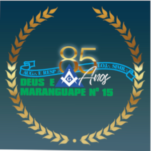

A.'.R.'.L.'.S.'. Deus e Maranguape Nº 15

Histórico resumido
No dia 23 de setembro de 1936, no Oriente de Maranguape, à Rua Barão do Rio Branco, Nº 40, reuniram-se 38 irmãos, sob a presidência do Sereníssimo Grão-Mestre José Matheus Gomes Coutinho e fundaram a Augusta e Respeitável Loja Simbólica Deus e Maranguape Nº 15, que foi regularizada conforme o Ato Nº32 de 21 de dezembro de 1936.
Funcionou normalmente até 18 de maio de 1943, data em que adormeceu e foi incorporada à A.'.R.'.L.'.S.'. Liberdade V Nº 12. Foi soerguida em 21 de abril de 1972, conforme Decreto 01/72, estando a Mui Respeitável Grande Loja Maçônica do EStado do Ceará sob o malhete do Sereníssimo Grão Mestre João Ramos de Vasconcelos César.
Inicialmente os trabalhos realizaram-se no Palácio Maçônico da Grande Loja, no Oriente de Fortaleza e em 22 de março de 1974 passaram a se realizar no Oriente de Maranguape, em sede provisória. A partir de 20 de novembro de 1981, as reuniões da ARLS deus e maranguape N º15 passaram para o Palácio Maçônico Walter Pimenta Lira (Sede própria), tendo ocorrido a sagração do templo em 23 de abril de 1983.